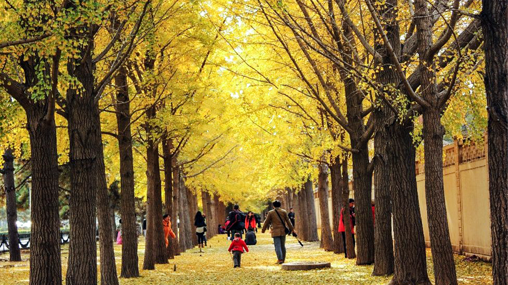
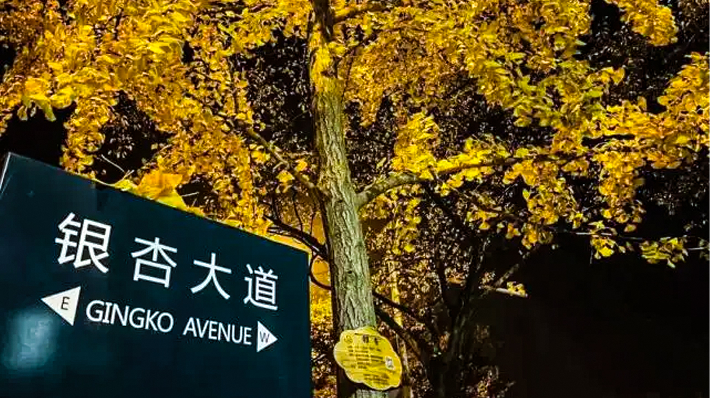
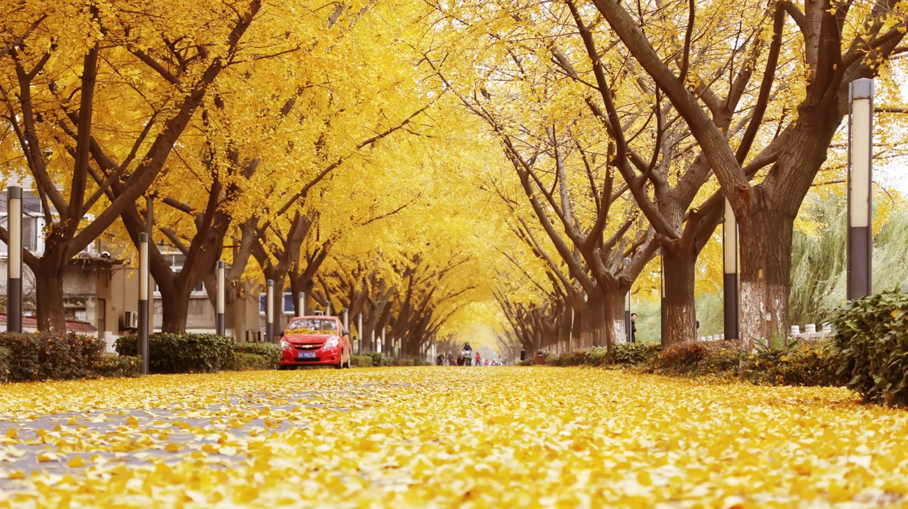
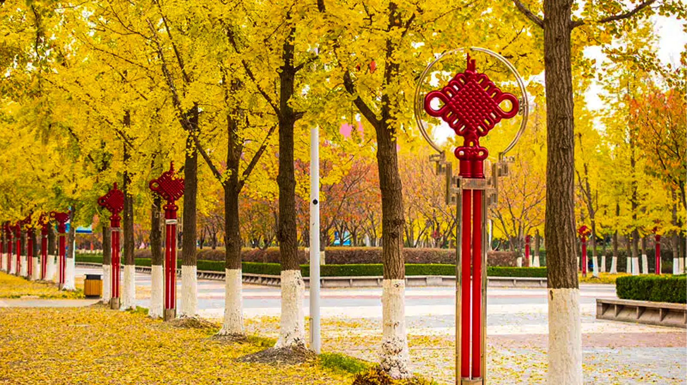

云南大学
位于云南大学东陆校区校图书馆旁边的这条银杏大道长约200米左右，每逢秋季，该大道就会充满金黄色的银杏叶，总会和知识的收获联想在一起，别有一番趣味。
银杏大道从文渊楼一直延伸到会泽院，据说那些银杏树是当年一位老校工栽下的，如今枝繁叶茂，每年秋冬时节，银杏叶变黄落下时就成了云大一道独特亮丽的风景线，名扬全国。也成为秋天必去的打卡景点。
在云大还有个小有名气的学生社团“银杏文学社”，全国著名诗人于坚就曾是这个文学社的骨干。云南大学也正是因为这条银杏大道而入选了全国十大最美校园。
云南大学的前身是1922年云南省都督唐继尧所创办的私立东陆大学，1934年改为省立云南大学，如今已进入了教育部“双一流大学”建设名单。
云南大学地球科学学院@2021~2022